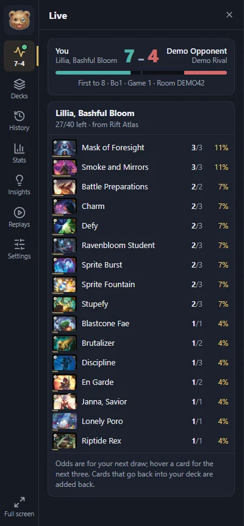

Live deck tracker
See what's left in your deck and your odds of drawing each card next, updated as you play. Cards that go back into your deck are added back.
- Your deck is detected from Rift Atlas, even after sideboarding in a Bo3.
- The score, the race to 8 and the games of the match at a glance.
